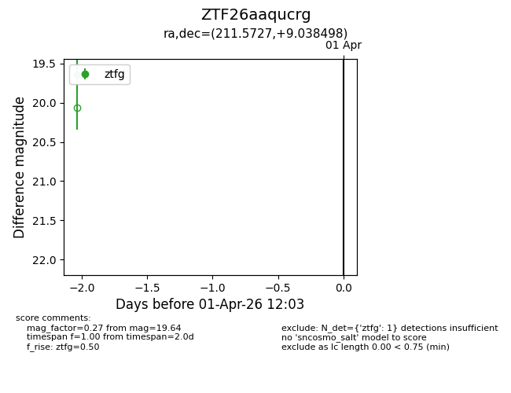
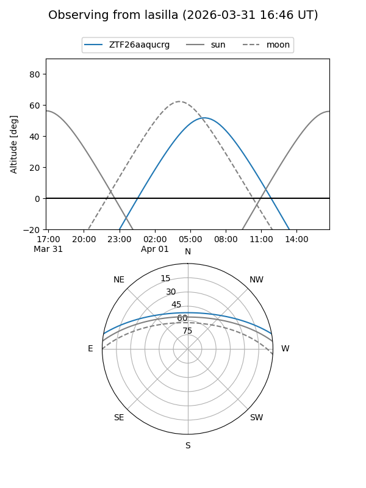
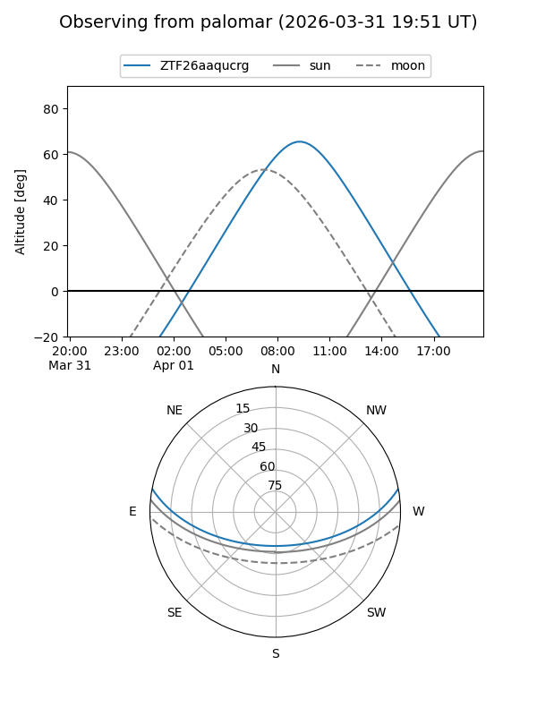

ZTF26aaqucrg
Target ZTF26aaqucrg at 2026-04-01 12:07
Aliases and brokers:
FINK: link
Lasair: link
ALeRCE: link
alt names
ZTF26aaqucrg (ztf,fink_ztf)
Coordinates:
equatorial (ra, dec) = 211.5727,+9.03850
equatorial (HMS+DMS) = 14:06:17.45,+09:02:18.59
galactic (l, b) = (350.7915,+64.70333)
Flags:
Photometry:
last ztfg=19.64
1 ztfg detections
Lightcurve

Visibility


Additional plots